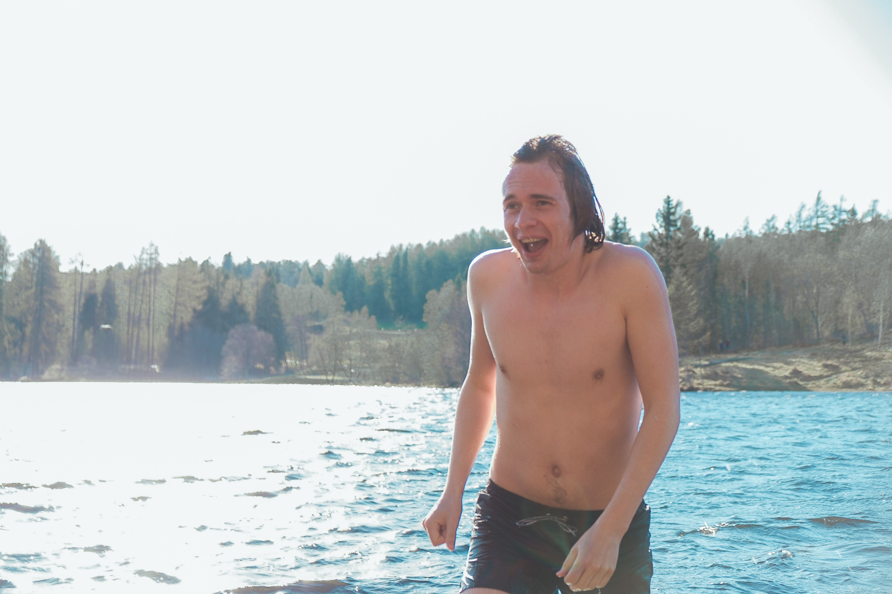

Les også

Togtur på skinner

Togtur på skinner del 2

Når gradestokken bikker 20 tidlig i mai måned er det lett å bli ivrig. Byen våkner fra sin vinterdvale. Engangsgriller og solbrente studenter fyller plutselig opp alle parker og plener, tilsynelatende over natten. En sjenert forhåpning tripper fra munn til munn og bærer med seg et uhørt budskap: er den trønderske vinteren i ferd med å gi slipp? Spørsmålet provoserer, og lirker noen få av Redaksjonens modigste ut fra tegnesalene, vekk fra solveggens trygge varme, ut mot vårens siste bastion: vannet! Og dammen. Og sjøen og havet. Alt for leserens fornøyelse, da vi har kompilert sanseinntrykkene i en liten guide, anmeldelse og krønike i dette nette magasin!
Vi beveger oss videre langs utkanten av Byåsen, mot det mindre kjente, men minst like idylliske, Kyvatnet. På vei for å finne den perfekte badeplass går vi forbi både brygger og svaberg. Vi slår oss ned på en gressplen langs en grussti, og her fyrer vi også opp engangsgrillen. Til tross for at området gir oss en følelse for å være langt vekke fra byen, ramler man over både radiostyrte båter, anleggsområder og midlertidig-veiarbeid-skilt. Området virker også som et populært festested for den yngre delen av Trondheims befolkning, og er du heldig, er det mulighet for å få øye på opptil flere eksemplarer av den meget sjeldne Grønnrussen.
Etter et alle tiders grillpølse-måltid er det nok en gang på med bikinien. Vi finner en brygge-aktig sementanretning, og må innrømme at det sitter litt langt inne å kaste seg uti. Her får vi dagens første hoppemulighet, og Ingrid stuper rett inn i en tangklyse. Ellers er det ikke så værst. Temperaturen er desidert dagens varmeste, er vi oppe i 20 grader?! Neida. Vil tro en 15-16 grader er mer korrekt. Underdogen Kyvatnet imponerer sterkt, og hadde det ikke vært for en fotballtrening, skulle vi gjerne blitt sittende hele kvelden. Første badedag er omme, og vi går til sengs med vått hår og pollenallergiske øyne.
Etter en god natts søvn møtes vi på St. olavs pir på det som er årets til nå kanskje varmeste dag, noe som merkes, da området er stappfullt av engangsgrillende studenter. Det er perfekt for å sette seg ned, dog ikke særlig villmarkete av seg. Volleyballbaner, grønt gress, lite mulighet for skifting og bevegelig bro er bare noen av fasilitetene man finner her. Vårt første sjøbad blir også det første hvor vi møter på andre badere.
Selve badingen viser seg å være en utfordning. For det første: hvordan skal man komme seg uti? Og for det andre: Hvordan skal man komme seg opp?? Spørsmålene står i kø. Stedet vi har valgt ut viser seg å bare være en steinur med tilhørende tangskog, noe som ikke blir satt like mye pris på hos alle redaksjonens medlemmer. Vi klarer etter mye nøling klarer vi på et vis å komme oss uti med noe som kan minne om en grasiøs blanding av et stup og en potetsekk som blir dumpet. Temperaturen er heller ikke noe å skryte av. Nanna anslår umiddelbart at det er ti kuldegrader, men øker til hele 14 varmegrader etter at sjokket har lagt seg. Underlaget er tang av ypperste kvalitet, pluss en haug med uforusigbare, spisse steiner som resulterer i en lettere oppkuttet redaksjon. Alt i alt er St. Olavs Pir på Ila en helt ok plass for en dukkert nært byen, og på toppen av det hele blir vi vitne til måkesex, og ‘kontakt med naturen’-aksjen stiger til himmels.